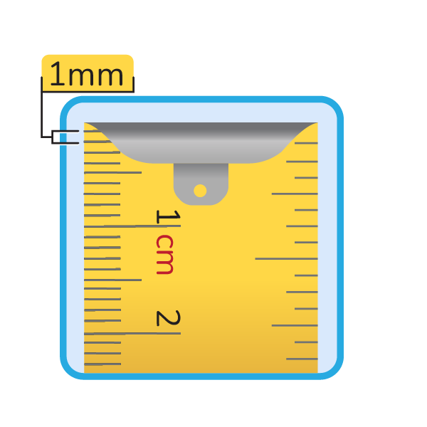
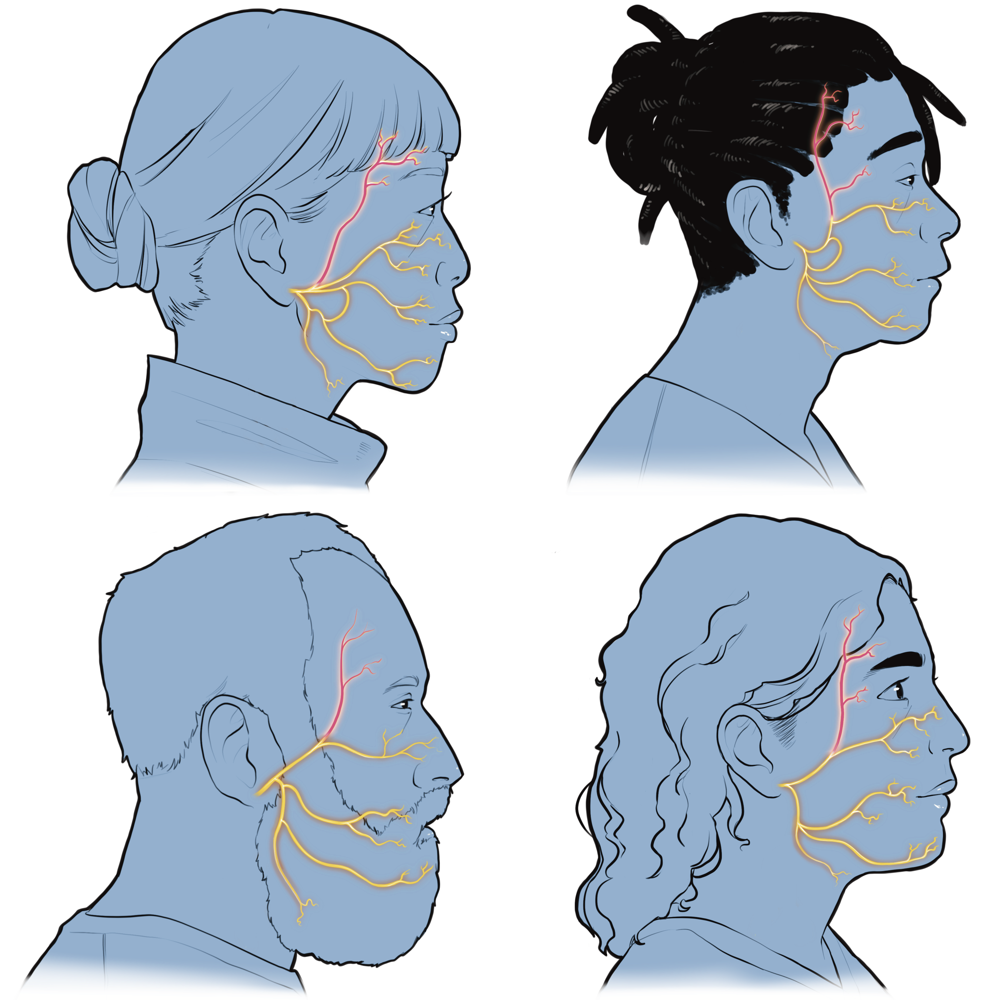
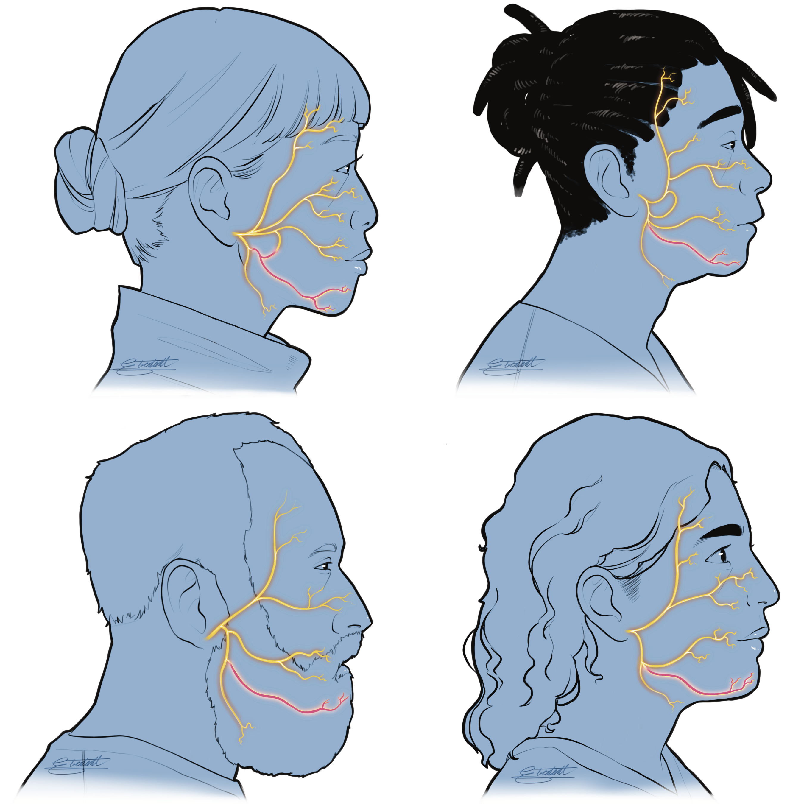

Nerves
Nerves are like wires that run through your whole body. They carry messages between your brain and the rest of your body. Some nerves help you feel things like touch (sensory nerves), others help your body move (motor nerves), and many do both.
What happens when a nerve gets damaged?
Nerves can be damaged by infection, trauma, or in other ways. If the pathway between the nerve and muscle is damaged and not restored, the muscle can shrink and become scarred (atrophy or fibrosis). In some cases, injured nerves can fix themselves by regrowing (nerve regeneration) but they are slow.

Can nerves heal?
If the injury is far from the muscles, the nerve can take a long time to regrow. Nerves grow approximately 1mm per day, but factors like age and health can impact how effectively they regrow. Without a nerve connection, muscles will gradually shrink (atrophy). If there is no nerve to muscle connection within 12-18 months, muscles can permanently lose their ability to work.
This means that when you have an injury to a nerve, it may be helpful to meet with a specialist sooner rather than later to discuss whether there are strategies to help the nerve heal, although this is not always possible.
Facial Nerve
We use facial expressions every day to show how we feel. Even without talking, our faces can show if we are happy, sad, angry or surprised. These expressions help us communicate with all the people around us. The facial nerve is responsible for controlling facial expressions by moving the muscles in your face.
The facial nerve is known as cranial nerve 7 (CNVII), and has both motor and sensory functions. You have two facial nerves, one on each side of your face and they work together.
The facial nerve has 5 main branches that help you move the muscles in your face, so you can smile, frown, blink, and much more. These branches are:


Everyone's facial nerve branches uniquely like a finger print but the general organization stays the same. There are often interconnections between these branches making it a very complicated network of tiny nerves.

Facial Muscles
The muscles of facial expression are controlled by the facial nerve and work together so you can show a wide range of emotions with your face. The muscles are innervated by the branch of the facial nerve in that same region. Since everyone has small variations in their branching patterns, it takes time to learn the specific anatomy for each individual. Some of the main muscles are shown here:

{kind=link}